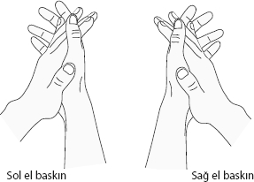

| Travma ve tehditlerin etkilediği organlar | |
| Organ | Tehdit / Travma |
| Adrenal medulla | Aşırı genel stres yüklenmesi |
| Ağız | Elde edememe ya da çıkaramama (söyleyememe, konuşamama) |
| Akciğer – bronşlar | Ölüm korkusu |
| Akciğerler - bronş - goblet hücreleri | Nefes alamama korkusu |
| Akciğerler - bronş mukozası | Bölgesel tehdit korkusu |
| Bademcikler | Yutamamak ya da kurtulamamak |
| Bağırsak - düz kaslar | İçindeki parçaların hareket edememesi tehdidi |
| Bağırsak - körbağırsak – apandisit | Sindirilemeyen öfke |
| Böbrek üstü kabuğu (adrenal korteks) | Yanlış yöne doğru hareket, kaybolma |
| Böbrekler - parankim | Su veya sıvıyla ilgili tehdit |
| Böbrekler - toplama tüpleri | Terk edilme, sürüden dışarıda kalma |
| Burun | Kokuyla ilgili tehdit |
| Dalak | Kan kaybı, özdeğeri kaybetme travması |
| Deri - Epidermis - Dış deri | Ayrılık travması |
| Deri - Dermis - İç deri | Kişiliğe, kimliğe tehdit, fiziksel saldırı |
| Dilaltı tükürük bezleri | Yutamamak ya da kurtulamamak |
| Diş minesi | Isırma ya da ısıramama travması |
| Gırtlak - kas | Şok eden korku |
| Gırtlak - mukoza | Konuşma kaybı korkusu, şok eden korku |
| Gözler - camsı cisim | Arkadan saldırı korkusu |
| Gözler - iris | Işık parçalarını hızlı görememe ya da kaçamama tehdidi |
| Gözler - konjonktiva | Görsel ayrılık |
| Gözler - kornea | Güçlü görsel ayrılık |
| Gözler - kristalin lens | Görsel ayrılık |
| Gözler - retina | Arkadan saldırı korkusu |
| İnce bağırsak | Sindirilemeyen besin, nesne, söz |
| İnce bağ., onikiparmak | Sindirilemeyen bir travmanın öfkesi |
| Kalp damarları, arterler | Özdeğer kaybı |
| Kalp damarları, koroner arterler | Bölgesel tehdit, bölge koruma zorunluluğu |
| Kalp damarları - koroner damarlar | Bölgesel tehdit, cinsel travmalar |
| Kalp kası - miyokard | Aşırı genel stres yüklenmesi |
| Kan damarları - iç tabaka (intima) | Özdeğer kaybı |
| Karaciğer - parankim | Açlık korkusu, varoluş tehdidi |
| Kaslar - iskelet | Özdeğer kaybı (hareket etmeyle ilgili) |
| Kemikler | Özdeğer kaybı |
| Kıkırdak | Özdeğer kaybı |
| Kolon | Bir olayı, parçayı, sözü hazmedememe |
| Kulak | İşitmeyle ilgili tehdit, duymak istememe |
| Kulak altı tükürük bezleri | İçeri almak ya da dışarı atmak için yeterince tükürük salgılayamamak |
| Lenf - damar | Özdeğer kaybı |
| Lenf - düğümleri | Özdeğer kaybı |
| Meme - bezler | Eş, çocuk, yuvayla ilgili tehdit (endişe, tartışma) |
| Meme - intraduktal kanal | Ayrılık korkusu, bir yakını kaybetme tehdidi |
| Mesane - mukoza | Bölge-Alan işaretleme zorunluluğu, tehdidi |
| Mide - büyük eğrilik | Bir olayı, konuyu, parçayı, sözü hazmedememe |
| Mide - mukoza | Bölgesel çatışma korkusu veya öfkesi |
| Mide - yemek borusu gırtlak | Bir olayı, konuyu, parçayı, sözü hazmedememe |
| Mide - Yemek borusu mukozasında üst 2/3lük kısım | Bir olayı, konuyu, parçayı, sözü hazmedememe |
| Motorik - motorial felci (ms) | Kaçılamayan, savaşılamayan, karar verilemeyen büyük bir travma |
| Pankreas | Kavga edilmesi gereken büyük bir tehdit |
| Pankreas, alfa hücreleri | Korku, tiksinti yaratan tehdit |
| Pankreas, beta hücreleri | Direnç gösterilmesi gereken tehdit |
| Pankreas,bez kanalları | Bölgesel tehdide yönelik öfke |
| Pankreas - mukoza | Bölgesel tehdide yönelik öfke |
| Paratiroid bezleri | Elde edememe, ya da çıkaramama |
| Penis | Penetrasyon, üreme tehdidi |
| Perikard (Kalp zarı) | Kalbe fiziksel saldırı tehdidi |
| Periosteum (Kemik zarı) | Çok şiddetli ayrılık travması |
| Periton (Karın zarı) | Gögüse ya da karına fiziksel saldırı tehdidi |
| Pleura (Akciğer zarı) | Göğüse fiziksel saldırı tehdidi |
| Prostat | Özdeğer kaybı, seksüel başarısızlık trav. |
| Rahim | Cinsel travma, özdeğer kaybı, çirkinlik travması |
| Rahim - ağız ve boyun | Bölge-Alan kaybetme korkusu |
| Rahim - boyun ya da ağız kasları | Özdeğer kaybı |
| Rahim, dölyatağı borusu | Cinsel travma, özdeğer kaybı, çirkinlik travması |
| Rahim - kaslar | Cinsel travma, özdeğer kaybı, çirkinlik travması |
| Rektum - kas - anal sfinkter | Bölgesel tehditte sınırları çizememe travması |
| Rektum - mukoza | Kadın kimliğine ya da bölgeye bir tehdit |
| Saç - kellik | Ayrılık, terk edilme travması |
| Safra kesesi - kanallar | Bölgesel tehdide yönelik öfke |
| Tendonlar | Özdeğer kaybı |
| Testis | Bir yakının şiddetli ve derin kayıp trav. |
| Tiroid - bezler | Elde edememe ya da çıkaramama (söyleyememe, konuşamama) |
| Tiroid - kanallar | Güçsüzlük, acizlik |
| Vajina, Bartholin bezleri | Vajinal kuruluk travması |
| Vajina mukozası | Cinsel ilişkiye girememe travması |
| Yüz - yüz felci | Yüz kaybetme tehdidi, kandırılma kor. |
| Yumurtalıklar | Bir yakının şiddetli ve derin kayıp trav. |
Travmayı doğru teşhis etmek açısından şu soru sizi yönlendirecektir.
Sorun başlamadan 6 ay – 1 sene öncesine kadar
hayatımda bahsi geçen alanda nasıl bir travma
yaşandı?
Teşhis ve tam temizliğin yapılması açısından kullanabileceğiniz başka bir araç daha var. Sorunumuzu vücudumuzun hangi tarafında yaşadığımız, travmanın iç yüzünü ele veriyor.
Bu kuraldan yararlanabilmek için şimdi hangi beyninizin baskın olduğunu öğreneceğiz. Düşünmeden doğal bir şekilde alkışlayın. Ve aşağıdaki şekle bakın. Elleriniz hangisine daha yakın. Bir başka deyişle, hangi eliniz diğerinin üstünde?
Eğer sağlaksanız büyük ihtimalle sağ eliniz üstte olacak, solaksanız da tersi şekilde. Ancak, özellikle kendini sağlak olarak bilen, genellikle de başkalarına bakarak ya da zorla sonradan “sağlaklaştırılan” doğal solakların sol elleri yukarıda olacaktır.

Hangi eliniz yukarıdaysa, baskın eliniz odur.
Genel kural:
Vücudunuzda baskın elinizin bulunduğu taraf
baba, eş, ortakla ilgiliyken diğer taraf anne,
çocuk ve yuvanızla ilgilidir.
Yukarıda paylaştığım genel kuralın neden böyle geliştiğini kısaca açıklamaya çalışalım.
Eğer çocuğunu tutan bir kadına dikkatli olarak bakarsanız, çocuğunu baskın olmayan koluyla tutarken, işini daha rahat kullanabildiği asıl eliyle yapmaktadır. Çocuk hep baskın olmayan tarafı bloke ederken, diğer elini iş yapmaya, eşiyle ilgilenmeye ayırabilir.
Bu milyonlarca yıldır benzer şekilde kendini tekrarladığı için beyin, sağlak için sol tarafı, solak için sağ tarafı çocuk ve benzeri konularla özdeşleştirmiş. Sadece çocuk değil, anne ve yuvayı da aynı tarafta kodlamış. Diğer tarafıysa baba, eş ve eş olarak görebileceği konulara ayırmış.
Beynimizin tüm karışık konuları basite indirgediğini düşünürsek, işinizde yaşanacak bir sorunun “çocuk” olarak algılanabileceğini bunun da baskın olmayan tarafınızda kendini gösterebileceğini söyleyebiliriz. Mesela, işinizde yaşayacağınız sorun, eğer işinizi (özellikle de onu sıfırdan yaratıp geliştirdiyseniz) çocuk olarak görüyorsanız, muhtemelen kendini çocuk tarafında gösterecektir.
Kontrol merkezi beyin kökünde (brain stem) bulunmayan bütün organ ve dokular için bu kural geçerli. Ancak bahsettiğimiz kuralın istisnaları bulunuyor. Aşağıdaki organ ve vücut bölümlerinin kontrol merkezi beyin kökünde bulunuyor ve bu kural onlar için işlemiyor.
| • Adrenal medulla | • Akciğer |
| • Böbrekler - toplama tüpleri | • Boğaz |
| • Dilaltı tükürük bezleri | • Gözyaşı bezi |
| • İnce bağırsak | • İris (göz) |
| • Kalın bağırsak (kolon) | • Karaciğer |
| • Mide | • Ortakulak |
| • Pankreas | • Penis |
| • Prostat | • Rahim |
| • Rektum | • Tiroid bezi |
| • Vajina – bartholin bezleri | • Yemek borusu |
Programlar ve hastalıklar
Okuduklarınızın ışığında, “Biz bunları hastalık olarak biliyoruz, şimdi nereden çıktı bu programlar?” diye düşünebilirsiniz.
Klasik Batı tıbbının “klasik” çalışma şekli, hastalıkla beraber görülen belirtilerin, şikâyetlerin gruplanarak bunlara isim verilmesi, özellikle beslenmenin düzenlenmesi, ilaç ve gerektiğinde fiziksel olarak bunlara müdahale edilmesi şeklindedir.
Belirtileri gruplayarak hastalık olarak nitelendirmek, büyük resmi görmemek anlamına geliyor. Aslında “neden sonuç ilişkisi” kurulmaksızın ilaç benzeri dışsal yöntemlerle yapılan müdahaleler, baskılanan, şiddeti azaltılan ama hiç geçmeyen “kronik” şikâyetler yaratıyor.
Sağlık konusunun “fiziksel” olarak nitelendirilen bölümünü bitirmeden önce size hatırlatmak istediğim tek bir şey var: Temizleyebileceğiniz hastalıkların hiçbir şekilde sınırı yok! Buna şu an adını “zikretmediğim” ama hepimizin “en korktuğu” hastalık da dahil olmak üzere...
Klasik tıbbı tartışmayı başka bir kitaba bırakarak yolumuza konunun “psikolojik” boyutuyla devam edelim...